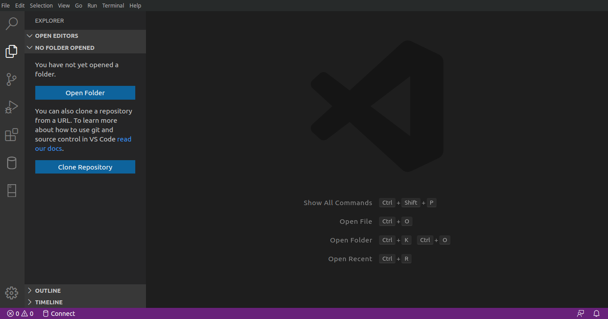

Autor : Antony Barja
Un procedimiento indispensable para poder cumplir con todo los objetivos planteados en este repositorio es la instalación de softwares con la cual vamos ir trabajando y resolviendo algunos ejercicios planteados durante las respectivas sesiones, para poder obtener los mismos resultados es importante tener los mismos softwares con las mismas configuraciones y la base de datos con la cual vamos trabajar las diferentes combinaciones de comandos SQL.
Como primeros pasos vamos a proceder a instalar los respectivos softwares:
VisualCode
Es un ligero pero poderoso editor de código multiplataforma (Windows, macOS, GNU/Linux) que posee un gran ecosistemas de extensiones para dar soportes a varios tipos de lenguajes de programación y de desarrollo web, entre ellas destaca Python, R, Html, Css, JavaScript, Node.js ,Go, entre otros.
Instalación de VisualCode
Para poder instalar VisualCode en GNU/Linux, primero tenemos que saber la distribución con la cual estamos trabajando, para esto nos dirigimos hacia la consola y editamos el siguiente comando:
antony$antony:~$ cat /etc/*-release
DISTRIB_ID=Ubuntu
DISTRIB_RELEASE=19.10
DISTRIB_CODENAME=eoan
DISTRIB_DESCRIPTION="Ubuntu 19.10"
NAME="Ubuntu"
VERSION="19.10 (Eoan Ermine)"
ID=ubuntu
ID_LIKE=debian
PRETTY_NAME="Ubuntu 19.10"
VERSION_ID="19.10"
HOME_URL="https://www.ubuntu.com/"
SUPPORT_URL="https://help.ubuntu.com/"
BUG_REPORT_URL="https://bugs.launchpad.net/ubuntu/"
PRIVACY_POLICY_URL="https://www.ubuntu.com/legal/terms-and-policies/privacy-policy"
VERSION_CODENAME=eoan
UBUNTU_CODENAME=eoan
Una vez identificado el tipo de distribución procedemos a instalar el software mediante los siguientes comandos:
sudo apt update
sudo apt install software-properties-common apt-transport-https wget
wget -q https://packages.microsoft.com/keys/microsoft.asc -O- | sudo apt-key add -
sudo add-apt-repository "deb [arch=amd64] https://packages.microsoft.com/repos/vscode stable main"
sudo apt install code
Finalmente para comprobar que la instalación fue exitosa procedemos iniciar el software cómo se muestra en la siguiente imagen.

PostgreSQL - PostGIS
PostgreSQL es un potente sistema de gestión de base de datos relacional orientado a objetos de código abierto con más de 30 años de desarrollo activo.
PostGIS es un extención PostgreSQL que da soporte al manejo de datos geográficos,y permite que las consultas de ubicación se ejecuten mediante comandos de SQL.
Instalación de PostgreSQL-PostGIS
Para poder instalar PostgreSQL y PostGIS, primero debemos verificar si versión de ambos softwares están disponibles para el tipo de distribución de GNU/Linux que estamos utilizando, para esto puedes encontrar más detalle en el siguiente enlace clic aquí.
Para nuestra distribución de Ubuntu sólo tenemos que emplear los siguientes comandos:
sudo apt-get update
sudo apt-get install postgresql-11-postgis-2.5-scripts
Para verificar que la instación fue correcta procedemos a tipear los siguientes comandos
psql --version
sudo -i -u postgres
createuser postgis_test
createdb postgis_db postgis_test
psql -d postgis_db
postgis_db=# CREATE EXTENSION postgis;
postgis_db=# SELECT PostGIS_version();
PgAdmin
Es una plataforma de administración y desarrollo de código abierto para PostgreSQL
Instalación de PgAdmin
sudo apt-get install wget ca-certificates
wget --quiet -O - https://www.postgresql.org/media/keys/ACCC4CF8.asc | sudo apt-key add -
sudo sh -c 'echo "deb http://apt.postgresql.org/pub/repos/apt/ `lsb_release -cs`-pgdg main" >> /etc/apt/sources.list.d/pgdg.list'
sudo apt-get update
sudo apt install pgadmin4 pgadmin4-apache2
Observación: Si olvidas cual es tu password de tu cuenta de postgres con este comando puedes crear una nueva contraseña
sudo passwd postgres
Finalmente para verificar que la instalación fue exitosa procedemos abrir el software


QGIS
Es un software de Sistema de Información Geográfica libre y de codigo abierto orientado al manejo, análisis, edición y representación de datos espaciales.
Instalación de QGIS 3.X
La instalación de QGIS va a depender del tipo de distribución GNU/Linux con la cual estamos trabajando, para nuestro caso es Ubuntu 19.10 eoan, entonces para instalar QGIS sólo debemos emplear los siguientes comandos:
sudo nano /etc/apt/sources.list
deb https://qgis.org/ubuntu eoan main
deb-src https://qgis.org/ubuntu eoan main
wget -O - https://qgis.org/downloads/qgis-2019.gpg.key | gpg --import
gpg --fingerprint 51F523511C7028C3
gpg - exportar - armadura 51 F523511C7028C3 | sudo apt - key add -
sudo apt-get update
sudo apt-get install qgis qgis-plugin-grass
sudo apt install saga
Para verificar que la instalación fue exitosa procedemos a iniciar QGIS